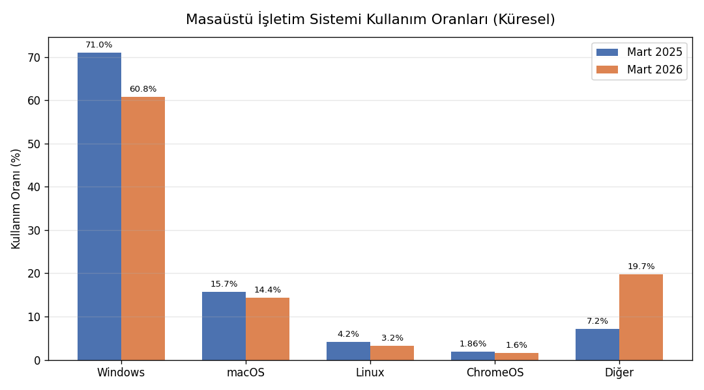
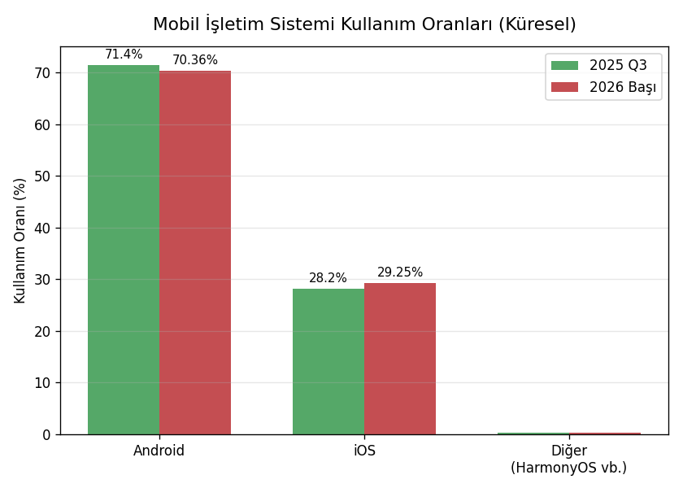
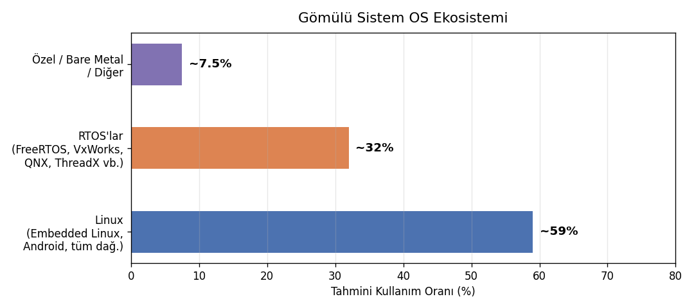
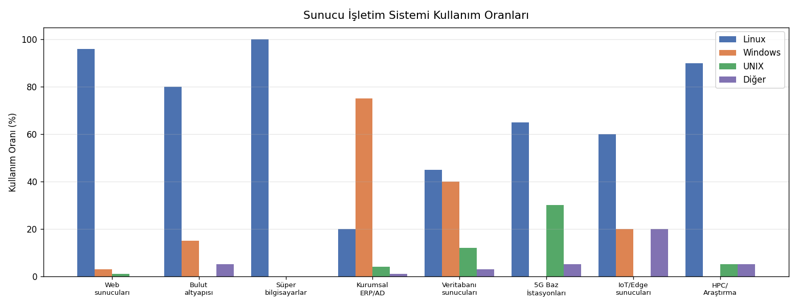

1. GİRİŞ
1.1. Temel Kavramlar: Sistem Programlama ve İşletim Sistemleri
Kursumuzun başında iki hafta bazı temel kavramlar ve konular üzerinde duracağız.
1.1.1. Sistem Programlama Nedir?
Bilgisayar donanımıyla arayüz oluşturan, uygulama programlarına çeşitli bakımlardan hizmet veren programlara sistem programları, programlamanın bunlarla ilgili alanına da sistem programlama (system programming) denilmektedir. Sistem programlama etkinlikleri aşağı seviyeli olma eğilimindedir. Bunları yazmak için önemli ölçüde teorik bilgiye ve uygulama becerisine gereksinim duyulmaktadır. Sistem programlama programlamanın yükte hafif pahada ağır bir alanını oluşturmaktadır. Bu yönüyle adeta yazılımın ağır sanayisi niteliğindedir. Bilişim sektöründeki Microsoft, Apple, Google gibi pek çok büyük kurum geliştirdikleri sistem yazılımları sayesinde bu hale gelmişlerdir. Tipik sistem programlama uygulamalarından bazıları şunlardır:
İşletim Sistemleri
Derleyiciler ve Yorumlayıcılar
Editörler
Gömülü Sistem Uygulamaları
Debug Programları
Aşağı Seviyeli Haberleşme Programları
Virüs ve Antivirüs Yazılımları
Çevre Birimlerinin ve Diğer Donanımsal Aygıtların Programlanması ve Aygıt Sürücüleri
Veritabanı Motorları
Sanallaştırma Yazılımları ve Emülatör Yazılımları
Oyun Motorları
Sistem programlama etkinlikleri için en çok kullanılan programlama dilleri C, C++ ve Sembolik Makine Dilleridir. Rust Programlama Dili de son yıllarda bu alanda bir yer edinmeye çalışmaktadır. Her ne kadar sistem programlama denildiğinde akla C, C++, Rust ve sembolik makine dilleri geliyorsa da bazı sistem programları Java ve C# gibi yüksek seviyeli dillerle de yazılabilmektedir.
1.1.2. İşletim Sistemleri
İşletim sistemleri bilgisayar donanımının kaynaklarını yöneten, bilgisayar donanımı ile kullanıcı arasında arayüz oluşturan sistem programlarıdır. Bilgisayar bilimlerinin akademik öncülerinin çoğu işletim sistemlerini bir kaynak yöneticisi (resource manager) olarak tanımlamıştır. Uygulama programları işletim sisteminin sağladığı olanaklardan faydalanmaktadır.
┌────────────────────────┐
│ Uygulama Programları │
├────────────────────────┤
│ İşletim Sistemi │
├────────────────────────┤
│ Bilgisayar Donanımı │
└────────────────────────┘
İşletim sistemlerinin yönettiği kaynakların en önemlileri şunlardır:
CPU: İşletim sistemi hangi programın ne zaman, ne kadar süre için CPU’ya atanacağına karar verip bu işlemleri gerçekleştirmektedir.
Ana Bellek (Main Memory — RAM): İşletim sistemi programların ana belleğin neresine yükleneceğine karar verir ve ana bellek kullanımını düzenler.
İkincil Bellekler: İşletim sistemi bir dosya sistemi (file system) oluşturarak dosyaların parçalarını ikincil belleklerde etkin bir biçimde tutar ve kullanıcılara bir dosya kavramıyla sunar.
Çevre Birimleri (klavye, fare, yazıcı vb.): İşletim sistemi fare, klavye, yazıcı gibi çevre birimlerini yöneterek onları kullanıma hazır hale getirir. Yardımcı işlemcileri (denetleyicileri) programlayarak onların işlev görmesini sağlamaktadır.
Ağ İşlemleri: İşletim sistemi ağa ilişkin donanım birimlerini yöneterek ve çeşitli ağ protokollerini oluşturarak dışarıdan gelen bilgileri onları talep eden programlara iletir.
İşletim sistemleri kaynak yönetimine göre alt sistemlere ayrılarak da incelenebilmektedir. Örneğin işletim sisteminin çizelgeleyici (scheduler) alt sistemi demekle CPU yönetimini sağlayan alt sistem kastedilmektedir. Ana bellek yönetimi (memory management) yine soyutlanarak incelenen önemli alt sistemlerden biridir. İşletim sistemlerinin ikincil bellek yönetimine dosya sistemi (file system) da denilmektedir. Tabii bütün bu sistemler birbirinden kopuk olarak değil birbirleriyle ilişkili bir biçimde işlev görmektedir. Bu durumu insanın solunum sistemi, dolaşım sistemi, sinir sistemi, boşaltım sistemi gibi alt sistemlerine benzetebiliriz. Bu alt sistemlerin birinde bile çalışma bozukluğu oluşsa insan yaşamını yitirebilmektedir.
İşletim sistemleri yapı olarak iki kısımdan oluşmaktadır: Çekirdek (kernel) ve kabuk (shell). Çekirdek işletim sisteminin donanımı kontrol eden ve kaynakları yöneten motor kısmıdır. Aslında işletim sistemi denildiğinde akla çekirdek gelmektedir. Kabuk ise işletim sisteminin kullanıcı ile arayüz oluşturan önyüzüdür. Örneğin UNIX/Linux sistemlerinde bash gibi komut satırı, GNOME, KDE gibi pencere yöneticileri, Windows’taki masaüstü (Explorer), macOS’teki masaüstü (Aqua) bu işletim sistemlerinin kabuk kısımlarını oluşturmaktadır.
+-----------------------------------+
| Kabuk (Shell) |
| +---------------------------+ |
| | Çekirdek (Kernel) | |
| +---------------------------+ |
+-----------------------------------+
Peki işletim sistemi bu kadar temel donanım yönetimini sağlıyorsa işletim sistemi olmadan programlama yapılabilir mi? İşletim sistemi olmadan programlama faaliyetine halk arasında bare metal programlama denilmektedir. Bare metal programlama genellikle mikrodenetleyicilerin kullanıldığı gömülü sistemlerde uygulanmaktadır. Bare metal programlama özel bir amaca hizmet edecek biçimde yapılmaktadır. Amaçlar fazlalaştığı zaman ve sistem karmaşıklaştığı zaman artık işletim sistemlerine gereksinim duyulmaktadır.
Bazı kontrol yazılımları işletim sistemlerinin bazı etkinliklerini de sağlamaktadır. Bir kontrol yazılımının işletim sistemi olarak isimlendirilmesi için yukarıda açıkladığımız kaynak yönetimlerinin önemli bir bölümünü sağlıyor olması gerekir. Bu kaynak yönetimlerinin çoğunu sağlamayan kontrol yazılımlarına genel olarak firmware de denilmektedir.
1.1.3. İşletim Sistemlerinin Sınıflandırılması
İşletim sistemleri çeşitli biçimlerde sınıflandırılabilmektedir.
Proses Yönetimine Göre
Aynı anda tek bir programı çalıştıran işletim sistemlerine tek prosesli (single processing), aynı anda birden fazla programı çalıştırabilen işletim sistemlerine ise çok prosesli (multiprocessing) işletim sistemleri denilmektedir. Örneğin DOS işletim sistemi tek prosesli bir sistemdi. Biz bu işletim sisteminde bir programı çalıştırırdık, ancak çalıştırdığımız program sonlanınca başka bir programı çalıştırabilirdik. Halbuki Windows, UNIX/Linux, macOS gibi işletim sistemleri çok prosesli işletim sistemleridir.
Kullanıcı Sayısına Göre
Birden fazla farklı kullanıcının çalışabildiği sistemlere çok kullanıcılı (multiuser), tek bir kullanıcının çalışabildiği sistemlere tek kullanıcılı (single user) sistemler denilmektedir. Genellikle çok prosesli işletim sistemleri aynı zamanda çok kullanıcılı sistemlerdir. Birden fazla kullanıcının söz konusu olduğu sistemlerde kullanıcıların yetkilerinin ayarlanması, kullanıcıların birbirlerinin alanlarına erişmesinin engellenmesi, sistem kaynaklarını belli bölüşmesi gerekebilmektedir. Örneğin DOS tek kullanıcılı bir sistemdi. Halbuki Windows, UNIX/Linux ve macOS sistemleri çok kullanıcılı sistemlerdir.
Çekirdek Yapısına Göre
İşletim sistemleri çekirdek yapısına göre tek parçalı çekirdekli (monolithic kernel) ve mikro çekirdekli (microkernel) olmak üzere ikiye ayrılmaktadır. Tek parçalı çekirdekli işletim sisteminin büyük kısmı çekirdek modunda çalışır. Mikro çekirdekli sistemlerde ise çekirdek modunda çalışan kısım minimize edilmeye çalışılmıştır. Aslında tek parçalı ve mikro çekirdekli tasarımları bir spektrum olarak düşünebiliriz. Linux çekirdeği tek parçalı (monolithic) tarafa daha yakındır. Mikro çekirdekli sistemlerden bazıları şunlardır:
Sistem |
Kategori |
Kullanım Alanı |
Olgunluk |
|---|---|---|---|
MINIX 3 |
Saf Mikro Kernel |
Eğitim / Araştırma |
Akademik |
QNX |
Saf Mikro Kernel |
Gömülü / Gerçek Zamanlı |
Üretim (Production) |
seL4 |
Saf Mikro Kernel |
Güvenlik Kritik |
Üretim (Formal Verified) |
Mach |
Saf Mikro Kernel |
Araştırma / Tarihsel |
Tarihi Referans |
GNU Hurd |
Mach Tabanlı |
Genel Amaçlı |
Geliştirme Aşamasında |
macOS/iOS (XNU) |
Mach Tabanlı (Hibrit) |
Masaüstü / Mobil |
Üretim (Hibrit Tasarım) |
L4 / Fiasco |
Akademik / Araştırma |
Araştırma / Gömülü |
Araştırma / Bazı Üretim |
OKL4 |
Akademik / Araştırma |
Gömülü / Mobil |
Üretim (Bazı platformlar) |
Haiku |
Kısmen Mikro Kernel |
Genel Amaçlı (Masaüstü) |
Geliştirme Aşamasında |
Genel olarak UNIX türevi sistemler tek parçalı çekirdekli biçimde tasarlanmaktadır. Aşağıda tek parçalı çekirdekli tarafa yakın olan işletim sistemlerine örnekler veriyoruz:
Sistem |
Tür |
Not |
|---|---|---|
Linux |
Modüler Monolitik |
LKM desteği var |
FreeBSD |
Saf Monolitik |
POSIX uyumlu |
NetBSD |
Saf Monolitik |
Taşınabilirlik odaklı |
OpenBSD |
Saf Monolitik |
Güvenlik odaklı |
Solaris |
Modüler Monolitik |
SVR4 tabanlı |
AIX |
Modüler Monolitik |
IBM Power mimarisi |
Original Unix |
Saf Monolitik |
Tarihsel referans |
Windows 95/98 |
Monolitik (Hibrit eğilimli) |
Üretim dışı, tarihsel |
Klasik (Eski) Mac OS |
Saf Monolitik |
Üretim dışı, tarihsel |
Tek parçalı çekirdekli tasarım genel olarak daha hızlı ve kırılgan, mikro çekirdekli tasarım ise genellikle daha yavaş ve sağlam olma eğilimindedir. Aşağıdaki tabloda iki tasarım mimarisini avantaj ve dezavantaj bakımından karşılaştırıyoruz:
Kriter |
Monolitik Çekirdek |
Mikro Çekirdek |
|---|---|---|
Performans |
[+] Sistem çağrıları doğrudan çekirdek uzayında işlenir; düşük gecikme. [+] Context switch maliyeti düşük. |
[-] IPC (mesaj geçişi) ek yük getirir ve gecikmeyi artırır. [-] Kullanıcı/çekirdek geçişi sık yaşanır. |
Güvenilirlik / Kararlılık |
[-] Bir sürücü hatası tüm sistemi çökertebilir. [-] Hata yayılımı (fault propagation) engellenemez. |
[+] Servisler kullanıcı uzayında izole çalışır. [+] Hatalı servis yeniden başlatılabilir, sistemi çökertmeden. |
Güvenlik |
[-] Çekirdek büyüdükçe güvenlik açığı yüzeyi genişler. [-] Tüm kod aynı ayrıcalık seviyesinde. |
[+] Minimal TCB (Trusted Computing Base). [+] Servisler birbirinden izole edilir. [+] seL4 gibi formal doğrulama mümkün. |
Modülerlik / Geliştirilebilirlik |
[-] Yeni servis eklemek çekirdeği doğrudan etkiler. [+] LKM ile kısmi modülerlik sağlanır. |
[+] Servisler bağımsız geliştirilebilir. [+] Yeni sürücü/servis kullanıcı uzayına eklenir, çekirdek değişmez. |
Donanım Erişimi |
[+] Donanıma yakın çalışma kolaylığı. [+] DMA, interrupt handling doğrudan çekirdekten yönetilir. |
[-] Donanım sürücüleri kullanıcı uzayında çalışır, donanım erişimi dolaylıdır. [-] Sürücü geliştirmesi daha karmaşık. |
Bakım / Test |
[-] Çekirdek kod tabanı büyük ve karmaşık. [-] Hata ayıklama (debugging) güçtür. [+] Geniş topluluk ve araç desteği. |
[+] Çekirdek küçük ve anlaşılır. [+] Her servis bağımsız test edilebilir. [-] IPC katmanı debug’i karmaşık olabilir. |
Uygun Kullanım Alanı |
[+] Genel amaçlı sistemlerde olgunlaşmış. [+] Masaüstü, sunucu, HPC ortamları. [+] Linux, BSD aileleri kanıtlanmış. |
[+] Gömülü, gerçek zamanlı ve güvenlik kritik sistemler için idealdir. [+] QNX, seL4 üretim ortamında başarılı. |
Dışsal Olaylara Yanıt Verebilme Özelliğine Göre
İşletim sistemleri dışsal olaylara yanıt verme bakımından gerçek zamanlı olan (real-time) ve gerçek zamanlı olmayan (non-real-time) sistemler olmak üzere ikiye ayrılabilir. Dışsal olaylara hızlı bir biçimde yanıt verebilecek çekirdek yapısına sahip olan işletim sistemlerine gerçek zamanlı (real-time) işletim sistemleri denilmektedir. Gerçek zamanlı işletim sistemleri de kendi aralarında katı (hard real-time) ve gevşek (soft real-time) işletim sistemleri olmak üzere ikiye ayrılabilmektedir. Katı gerçek zamanlı sistemler dışsal olaylara yanıt verme bakımından çok güvenilir olma iddiasındadır. Gevşek gerçek zamanlı sistemler ise bu konuda daha toleranslıdır. Linux gerçek zamanlı bir işletim sistemi değildir. Çeşitli çekirdek değişiklikleriyle (kernel patches) gevşek gerçek zamanlılık sağlanabilmektedir. Yaygın kullanılan bazı gerçek zamanlı işletim sistemleri aşağıdaki tabloda verilmektedir:
RTOS |
Geliştirici |
Lisans |
Kullanım Alanı |
Öne Çıkan Özellik |
|---|---|---|---|---|
VxWorks |
Wind River |
Ticari |
Havacılık, uzay, savunma |
DO-178C DAL-A sertifikalı |
INTEGRITY-178B |
Green Hills |
Ticari |
F-35, askeri aviyonik |
NSA onaylı, çok güvenli |
LynxOS-178 |
Lynx Software |
Ticari |
Askeri, havacılık |
POSIX uyumlu, DO-178C |
QNX |
BlackBerry |
Ticari |
Otomotiv, medikal, endüstri |
Microkernel mimarisi |
FreeRTOS |
Amazon (AWS) |
MIT (Açık kaynak) |
IoT, gömülü sistemler |
Çok küçük footprint |
Zephyr |
Linux Foundation |
Apache 2.0 (Açık kaynak) |
IoT, wearable, sensor sistemleri |
Modern, modüler yapı |
RTEMS |
Topluluk/NASA |
BSD (Açık kaynak) |
Uzay, bilimsel ekipman |
NASA Mars görevlerinde |
embOS |
SEGGER |
Ticari |
Medikal, endüstriyel |
Çok küçük RAM kullanımı |
ThreadX (Azure) |
Microsoft |
MIT (Açık kaynak) |
IoT, tüketici elektroniği |
IEC 61508 sertifikalı |
PikeOS |
SYSGO |
Ticari |
Airbus, demiryolu, otomotiv |
Çoklu işletim sistemi |
Dağıtıklık Durumuna Göre
İşletim sistemleri dağıtıklık durumuna göre dağıtık olan (distributed) ve dağıtık olmayan (non-distributed) sistemler biçiminde ikiye ayrılabilmektedir. Dağıtık işletim sistemlerinde sistem birden fazla bilgisayardan oluşan tek bir sistem gibi davranmaktadır. Örneğin 10 tane makineyi tek bir sistem olarak düşünebilirsiniz. Bu durumda bu bilgisayarların kaynakları (örneğin diskleri ve CPU’ları) bu 10 makine tarafından paylaşılmaktadır. Windows, UNIX/Linux ve macOS dağıtık işletim sistemleri değildir. Ancak bu sistemlerde çeşitli framework’ler ile dağıtık uygulamalar yapılabilmektedir.
Donanım Özelliğine Göre
Neredeyse her yaygın masaüstü işletim sisteminin bir mobil versiyonu da oluşturulmuştur. iOS (iPhone Operating System) ve iPadOS Apple firmasının mobil işletim sistemleridir. Bunlar macOS sistemlerinin mobil versiyonları gibi düşünülebilir. Android bir çeşit mobil Linux sistemi olarak değerlendirilebilir. Android projesinde Linux çekirdeği alınmış, biraz özelleştirilmiş, bazı kısımları atılmış, buna bir mobil arayüz giydirilmiş ve sistem akıllı telefonlara ve tabletlere uygun hale getirilmiştir. Nokia eskiden Symbian sistemlerinde büyük bir pazar payına sahipti. Ancak bu firma akıllı telefon geçişini iyi yönetemedi. MeeGo ve Maemo gibi işletim sistemlerini denedi. Sonra ekonomik sıkıntılar sonucunda büyük ölçüde Microsoft tarafından satın alındı. Windows’un mobil versiyonuna genel olarak Windows CE (Compact Edition) denilmektedir. Windows CE’nin akıllı telefonlar ve tabletler için özelleştirilmiş biçimine ise Windows Mobile ve Windows Phone denilmektedir. Ancak Microsoft 2010 yılında Windows Mobile işletim sistemini 2017’de de Windows Phone işletim sistemini sonlandırmıştır ve bu alandaki rekabetten tamamen çekilmiştir. Windows CE ise bugün Windows IoT Core ismi altında farklı bir tasarımla evrimleşerek devam ettirilmektedir.
Kursun yapıldığı sırada masaüstü işletim sistemlerinin masaüstü bilgisayarlardaki kullanım oranları şöyledir:
İşletim Sistemi |
Mart 2025 |
Mart 2026 |
|---|---|---|
Windows |
~71% |
~60.8% |
macOS |
~15.7% |
~14.4% |
Linux |
~4.2% |
~3.2% |
ChromeOS |
~1.86% |
~1.6% |
Bilinmeyen / Diğer |
~7.2% |
~19.7% |
{kind=link}

Programın çıktısı gibidir.
Biz burada masaüstü bilgisayarlar demekle kasalı olan bilgisayarları ve notebook gibi taşınabilir bilgisayarları kastediyoruz. Akıllı telefonları, tabletleri ve diğer gömülü sistemleri kastetmiyoruz. Akıllı telefon ve tablet dünyasındaki durum da şöyledir:
İşletim Sistemi |
2025 Q3 |
2026 Başı |
|---|---|---|
Android |
~71.4% |
~70.36% |
iOS |
~28.2% |
~29.25% |
Diğer (HarmonyOS vb.) |
~0.4% |
~0.39% |
{kind=link}

Programın çıktısı gibidir.
Görüldüğü gibi Android’in bu alanda büyük bir üstünlüğü vardır. Android’in Linux çekirdeğini temel aldığını anımsamak istiyoruz. Linux sistemlerinin gömülü sistemlerde ve sunucularda önemli bir üstünlüğü vardır. Her ne kadar gömülü sistemler için güvenilir istatistiklerin çıkartılması o kadar kolay değilse de yine de aşağıdaki tablo kursun yapıldığı dönem için bir fikir verebilir:
{kind=link}

Programın çıktısı gibidir.
Sunucu (server) olarak kullanılan bilgisayarlarda da Linux diğer seçeneklerden daha öndedir. Aşağıda kursun yapıldığı tarih için bir fikir amacıyla sunucu dünyasındaki kullanım oranlarını bir tablo halinde veriyoruz:
Kullanım Alanı |
Linux |
Windows |
UNIX |
Diğer |
|---|---|---|---|---|
Web sunucuları |
~96% |
~3% |
~1% |
— |
Bulut altyapısı |
~80% |
~15% |
— |
~5% |
Süperbilgisayarlar |
%100 |
— |
— |
— |
Kurumsal ERP / AD |
~20% |
~75% |
~4% |
~1% |
Veritabanı sunucuları |
~45% |
~40% |
~12% |
~3% |
5G Baz İstasyonları |
~65% |
— |
~30% |
~5% |
IoT / Edge sunucuları |
~60% |
~20% |
— |
~20% |
HPC / Araştırma |
~90%+ |
— |
~5% |
~5% |
{kind=link}

Programın çıktısı gibidir.
Kaynak Kod Lisansına Göre
Kaynak kod lisansına göre işletim sistemlerini kabaca açık kaynak kodlu (open source) ve mülkiyete bağlı (proprietary) olmak üzere ikiye ayırabiliriz. Açık kaynak kodlu işletim sistemleri değişik açık kaynak kod lisanslarına sahip olabilmektedir. Bunların kaynak kodları indirilip üzerinde değişiklikler yapılabilmektedir. Örneğin Windows işletim sistemi mülkiyete sahiptir. Oysa Linux, BSD sistemleri, Solaris, Android gibi sistemler açık kaynak kodludur. macOS sistemlerinin ise çekirdeği açık, diğer kısımları (örneğin kabuk kısmı ve diğer katmanları) kapalıdır.
Kaynak Kodun Özgünlüğüne Göre
Bazı işletim sistemleri bazı işletim sistemlerinin kodları alınıp değiştirilerek oluşturulmuştur (örneğin Android ve macOS’ta olduğu gibi). Bazı işletim sistemlerinin kodları ise sıfırdan yazılmıştır. Kodları sıfırdan yazılan yani orijinal kod temeline dayanan işletim sistemlerinden bazıları şunlardır:
AT&T UNIX
DOS
Windows
Linux
BSD’ler (belli bir yıldan sonra)
Solaris
XENIX
VMS
Burada mimari ile orijinal kod tabanını birbirine karıştırmamak gerekiyor. Linux, UNIX işletim sisteminin mimarisini temel almıştır. Ancak Linux’un tüm kodları sıfırdan yazılmıştır. Yani orijinal AT&T UNIX sistemindeki kaynak kodların bir bölümü kopyalanarak kullanılmamıştır.
GUI Çalışma Desteğine Göre
Bazı işletim sistemleri GUI çalışma modelini doğrudan desteklerken bazıları desteklememektedir. Örneğin Windows sistemleri çekirdekle entegre edilmiş bir GUI çalışma modeli sunmaktadır. UNIX/Linux sistemleri de X Window (ya da X11) ve Wayland katmanlarıyla benzer bir modeli sunmaktadır. Fakat örneğin DOS işletim sisteminin böyle bir doğal GUI desteği yoktu.
Ağ Üzerinde Hizmet Alıp Verme Rollerine Göre
İşletim sistemlerini ağ altında hizmet alıp verme rollerine göre istemci (client) ve sunucu (server) biçiminde de iki gruba ayırabiliriz. Bazı işletim sistemlerinin istemci versiyonları ile sunucu versiyonları birbirlerinden ayrılmıştır. Bazılarında ise bu ayrım yapılmamıştır. Örneğin Windows 7, 8, 10, 11 sistemleri bu bakımdan istemci (client) sistemleridir. Halbuki Windows Server 2016, 2019, 2025 sunucu sistemleri olarak piyasaya sürülmüştür. Eskiden Mac OS X’in istemci ve sunucu versiyonları farklıydı. Fakat Mac OS X 10.7 (Lion) ile birlikte istemci ve sunucu versiyonları birleştirildi. Linux dağıtımlarının çoğu da hem istemci hem de sunucu olarak kullanılabilmektedir. Ancak bazı dağıtımların ise istemci ve sunucu versiyonları farklıdır. Peki işletim sistemlerinin istemci ve sunucu versiyonları arasındaki farklılıklar nelerdir? Kabaca iki tür farklılığın olduğunu söyleyebiliriz. Birincisi çekirdekle ilgili farklılıklardır. Genellikle sunucu sistemlerinde çizelgeleyici alt sistemde istemci sistemlerine göre farklılıklar söz konusu olabilmektedir. İkincisi ise barındırdıkları yardımcı yazılımlardır. İşletim sistemlerinin sunucu versiyonları hazır bazı sunucu programlarını da içerecek biçimde paketlenmektedir.
1.1.4. Bilgisayar Donanımının Tarihsel Gelişimi
Şimdi de biraz bilgisayar donanımlarının tarihsel gelişimi üzerinde duralım. Elektronik düzeyde bugün kullandığımız bilgisayarlara benzer ilk aygıtlar 1940’lı yıllarda geliştirilmeye başlanmıştır. Ancak bundan önce hesaplama işlemlerini yapmak için pek çok mekanik aygıt üzerinde çalışılmıştır. Bunların bazıları kısmen başarılı olmuş ve belli bir süre kullanılmıştır. Mekanik bilgisayarlar alanındaki en önemli girişimler Charles Babbage tarafından yapılan Analytical Engine ve Difference Engine aygıtlarıdır. Analytical Engine tam olarak bitirilememiştir. Fakat bunlar pek çok çalışmaya ilham kaynağı olmuştur. Hatta bir dönem Babbage’ın asistanlığını yapan Ada Lovelace bu Analytical Engine üzerindeki çalışmalarından dolayı dünyanın ilk programcısı kabul edilmektedir. Şöyle ki: Rivayete göre Babbage Ada’dan Analytical Engine için Bernoulli sayılarının bulunmasını sağlayan bir yönerge yazmasını istemiştir. Ada’nın yazdığı bu yönergeler de dünyanın ilk programı kabul edilmektedir. (Gerçi bu yönergelerin bizzat Babbage’ın kendisi tarafından yazılmış olduğu neredeyse ispatlanmış olsa bile hâlâ böyle atıf vardır.)
Daha sonra 1800’lü yılların ortalarından itibaren elektronikte hızlı bir ilerleme yaşanmıştır. Bool cebri ortaya atılmış, çeşitli devre elemanları kullanılmaya başlanmış ve mantık devreleri üzerinde çalışmalar başlatılmıştır. 1900’lü yılların başlarında artık yavaş yavaş elektromekanik bilgisayar fikri belirmeye başlamıştır. 1930’lu yıllarda Alan Turing konuya matematiksel açıdan yaklaşmış ve bugünkü bilgisayar benzeri bir makinenin hangi matematik problemlerini çözebileceği üzerine kafa yormuştur. Turing bir şerit üzerinde ilerleyen bir kafadan oluşan ve ismine Turing Makinesi denilen soyut makine tanımlamıştır ve bu makinenin neler yapabileceği üzerinde çalışmalar yapmıştır. ACM Turing’in anısına bilgisayarın Nobel ödülü gibi kabul edilen Turing ödülleri vermektedir.
Dünyanın ilk elektronik bilgisayarının hangisi olduğu konusunda bir fikir birliği yoktur. Bazıları Konrad Zuse’nin 1941’de yaptığı Z3 bilgisayarını ilk bilgisayar olarak kabul ederken bazıları 1944’te yapılan Harvard Mark 1 bilgisayarını bazıları da 1945’te yapılan ENIAC’ı ilk bilgisayar olarak kabul etmektedir.
Modern bilgisayar tarihi üç döneme ayrılarak incelenebilir:
Transistör öncesi dönem (1940–1950’lerin ortalarına kadar)
Transistör dönemi (1950’lerin ortalarından 1970’lerin ortalarına kadar)
Entegre devre dönemi (1970’lerin ortalarından günümüze kadar ki dönem)
İlk bilgisayarlar transistörler olmadığı için vakum tüplerle yapılmıştı. Vakum tüpler hem büyük yer kaplıyordu hem de çok ısınıyordu dolayısıyla da çok güç harcıyordu. Ayrıca bunlar hassas devreler yapmak için güvenilir elemanlar değildi. Bu nedenle bu devirdeki bilgisayarlar bir salon büyüklüğündeydi.
Transistör ilk 1947 yılında John Bardeen, William Shockley ve Walter Brattain tarafından Bell Lab’ta icat edildi. Fakat ancak 1950’li yılların ortalarına doğru uygulama alanına girdi. İlk transistörlü radyo 1954 yılında yapılmıştır. Transistörler 1950’li yıllarda yavaş yavaş bilgisayar devrelerine de girmeye başladı. Bu sayede bilgisayar devreleri küçüldü ve kuvvetlendi. O zamanların en önemli firmaları IBM, Honeywell, DEC gibi firmalardı.
Entegre devreye benzer ilk çalışma aslında ilk olarak 1949 yılında Alman mühendis Werner Jacobi tarafından yapılmıştır. Ancak entegre devre fikri 1952 yılında İngiliz Geoffrey Dummer tarafından ortaya atıldı. Fakat gerçek anlamda ilk gerçekleştirimi 1958 yılında Texas Instruments şirketi çalışanı Jack Kilby tarafından yapıldı. Kilby’den habersiz olarak yaklaşık altı ay sonra benzer entegre devre gerçekleştirimi Fairchild Semiconductor firmasında Robert Noyce tarafından da yapılmıştır. Kilby ile Noyce patent konusunda mahkemelik olmuşlarsa da sonra anlaşma sağlanmış ve her iki kişi adına patentleme yapılmıştır. Robert Noyce aslında transistörü bulan ekipteki William Shockley’nin yanında çalışıyordu. Bu ekipte Gordon Moore da vardı. Shockley’nin yönetiminden memnun olmayan bu ekip Fairchild Semiconductor şirketine geçmiştir. Noyce şirketin genel müdürü, Moore da Ar-Ge müdürü olmuştur. Daha sonra 1968 yılında Robert Noyce ve Gordon Moore Fairchild Semiconductor firmasından ayrılarak Intel’i kurdu. İkili Intel’i kurduktan sonra şirkete Fairchild Semiconductor’dan Andrew S. Grove’u da yanlarına aldı. Entegre devreler önce Texas Instruments firması tarafından hesap makinelerinde kullanıldı. Sonra yavaş yavaş bilgisayarlarda da kullanılmaya başlandı.
Dünyanın entegre devre olarak (yani tek parça olarak) üretilen ilk mikroişlemcisi Intel’in 8080’i kabul edilmektedir. Intel daha önce 4004, 8008 gibi entegre devreler yaptıysa da bunlar tam bir mikroişlemci olarak kabul edilmemektedir. Entegre devreler kullanılarak mikroişlemciler yapılmaya başlanınca artık bilgisayar dünyası yeni bir döneme girmiş oldu. Transistörler ve sonra da entegre devreler elektronik alanında büyük devrim yaratmıştır.
Intel 8080’i tasarladığında bundan bir kişisel bilgisayar yapılabileceği onların aklına gelmemiştir. Kişisel bilgisayar fikri Ed Roberts isimli bir girişimci tarafından ortaya atıldı. Ed Roberts 8080’i kullanarak Altair isimli ilk kişisel bilgisayarı yaptı ve Popular Electronics isimli dergiye kapak oldu. Altair makine dilinde kodlanıyordu. Roberts buna Basic derleyicisi yazacak kişi aradı ve Popular Electronics dergisine ilan verdi. İlana o zaman Harvard’ta öğrenci olan Bill Gates ile Washington State University’de öğrenci olan arkadaşı Paul Allen başvurdular. Böylece Altair daha sonra Basic ile piyasaya sürüldü. Gates ve Allen okuldan ayrıldılar ve 1975 yılında Microsoft firmasını kurdular. (O zamanlar bu yeni kişisel bilgisayarlara mikrobilgisayarlar da denilmekteydi. Microsoft ismi buradan gelmektedir.) Amerika’da bu süreç içerisinde her yerde bilgisayar kulüpleri kuruldu ve pek çok kişi kendi kişisel bilgisayarlarını yapmaya heveslendi. Steve Jobs ve Steve Wozniak Apple’ı 1976 yılında böyle bir süreç içerisinde ve atmosferde kurmuştur.
IBM kişisel bilgisayar konusunu hafife aldı. Fakat yine de bir ekip kurarak bugün kullandığımız PC’lerin donanımını tasarlamıştır. Ancak IBM küçük iş olduğu gerekçesiyle bunlar için işletim sistemini kendisi yazmadı, taşeron bir firmaya yazdırmak istedi. Bu süreç içerisinde Microsoft IBM ile anlaşarak DOS işletim sistemini geliştirdi. (Yani ilk PC’lerin donanımı IBM tarafından tasarlanmış ve işletim sistemi de Microsoft tarafından yapılmıştır.) Microsoft IBM ile anlaştı. IBM uzağı göremediği için bu süreçte önemli ticari hatalar yaptı. Microsoft ile yaptığı anlaşmaya göre DOS’un başkalarına satışını tamamen Microsoft yapacaktı. IBM’in ikinci hatası da PC için donanım patentlerini almayı ihmal etmesi oldu. Bunun sonucunda pek çok firma IBM uyumlu daha ucuz PC’ler yaptılar. Fakat bunların hepsi işletim sistemini Microsoft’tan satın alıyordu. Böylece Microsoft 80’li yıllarda çok büyüdü ve dünyanın önemli bilişim firmalarından biri haline geldi.
1.1.5. İşletim Sistemlerinin Tarihsel Gelişimi
Şimdi de işletim sistemlerinin tarihsel gelişimi üzerinde duracağız. 1940’lı yıllarda ilk elektronik bilgisayarlar yapıldığında henüz bir işletim sistemi kavramı yoktu. Bu bilgisayarlara program yazacak olanlar işletim sistemi faaliyetlerini de kendileri yapmak zorunda kalıyordu. (Yani şimdi mikrodenetleyicilere bare metal kod yazanlarda olduğu gibi.) Transistör bulunduktan sonra 1950’li yıllarda artık elektronik bilgisayarlar yavaş yavaş transistörlerle yapılmaya başlandı. Transistörlerin ortaya çıkması hem bilgisayarların kapasitelerini ve güvenilirliklerini artırmış, hem de güç harcamalarını düşürmüştür.
1950’li yıllarda IBM gibi pek çok bilgisayar üreten firma yalnızca donanım satıyordu. İşletim sistemi gibi programları yazmak kullanıcıların yapması gereken bir işti. Böylece donanımı satın alan her kurum işletim sistemine benzeyen programları da kendisi yazıyordu. Bu anlamda standart bir işletim sistemi yoktu. Bugünkü anlamda ilk işletim sisteminin General Motors’un 1956 yılında IBM’in 701 sistemi için yazdığı NAA IO (North American Aviation Input Output System) olduğu söylenebilir.
1960’lara gelindiğinde IBM System/360 isminde yeni bir bilgisayar donanımı geliştirme işine girişti ve artık donanımla işletim sistemini birlikte satma fikrini benimsedi. Bu donanım 1964 yılında duyuruldu ve 1965 yılında gerçekleştirildi. İlk System/360 Model 30 bilgisayarları o zamanın Solid Logic Technology (SLT) teknolojisiyle üretilmişti. Hem öncekilerden daha güçlüydü hem de daha az yer kaplıyordu. Saniyede 34.500 işlem yapabiliyordu ve 8K ile 64K ana belleğe sahipti. 1967 yılında System/360’ın Model 60’ı piyasaya sürüldü. Bu model saniyede 16.6 milyon komut çalıştırabiliyordu ve ana belleği de tipik olarak 512K, 768K ve 1 MB idi. IBM System/360 donanımları için 1964 yılında ilk kez OS/360 işletim sistemini geliştirdi. IBM daha sonra 1967 yılında OS/360 Model 67 için OS/360’ın TSS/360 isminde zaman paylaşımlı (time sharing system) bir versiyonunu daha geliştirmiştir. IBM’in System/360 makineleri ve işletim sistemleri önemli ticari başarı kazandı. System/360’ı System/370 izledi. System/360 ve System/370 için başka kurumlar da işletim sistemleri geliştirmiştir. Michigan Terminal System (MTS) ve MUSIC/SP bunlar arasında önemli olanlardandır.
1960’lı yıllarda başka firmalar da işletim sistemleri geliştirmiştir. Örneğin Control Data Corporation (CDC) firmasının SCOPE işletim sistemi batch işlemler yapabiliyordu. Aynı firma MACE isminde bu işletim sisteminin zaman paylaşımlı bir versiyonunu da yazmıştır. Firma bu çalışmalarını 1970’li yıllarda Kronos işletim sistemiyle devam ettirmiştir. Burroughs firması 1961 yılında MCP işletim sistemi ile B5000 bilgisayarlarını, GE firması da 1962 yılında GECOS işletim sistemiyle GE-600 serisi bilgisayarlarını piyasaya sürdü. UNIVAC dünyanın ilk ticari bilgisayarlarını üreten firmadır. Bu firma da 1962 yılında UNIVAC 1107 için EXEC I işletim sistemini yazdı. Bu işletim sistemini sırasıyla Exec 2 ve Exec 8 izledi.
DEC (Digital Equipment Corporation) eskilerin en önemli bilgisayar üretici firmalarından biriydi. (DEC 1998 yılında Compaq firması tarafından, Compaq firması da 2002 yılında HP firması tarafından satın alındı.) Firmanın en önemli ürünleri PDP (Programmed Data Processor) isimli bilgisayarlarıdır. Firma PDP-1’den (1959) başlayarak PDP-16’ya (1971–1972) kadar PDP makinelerinin 16 versiyonunu piyasaya sürmüştür. DEC’in PDP-8’inin mini bilgisayar devrimini başlattığı söylenebilir. Bu model 50.000’in üzerinde satışa ulaşmıştır. UNIX işletim sistemi 1969 yılında ilk kez DEC’in PDP-7 modeli üzerinde yazılmıştır. 1965 yılında piyasaya sürülen DEC PDP-7 18 bitlik bir makineydi. Makine DECsys denilen işletim sistemi benzeri bir yönetici programla beraber satılıyordu. DEC’in 1966 yılında çıkardığı PDP-10 26 bitlik bir makineydi. DEC bu modelle birlikte işletim sistemi olarak TOPS-10 isimli bir sisteme geçti.
1960’lı yılların sonuna kadar işletim sistemleri ağırlıklı olarak sembolik makine diliyle yazılıyordu. 1960’lı yılların sonlarında AT&T Bell Lab. tarafından UNIX işletim sistemi geliştirildiğinde önemli bir devrim yaşandı. UNIX işletim sistemi 1973 yılında C ile yeniden yazılmıştır. Böylece artık işletim sistemlerinin yüksek seviyeli dillerle de yazılabildiği görülmüştür. PDP-11’i 16 bitlik PDP-12 izledi. PDP-12 Intel’in x86 ve Motorola’nın 6800 işlemcileri için ilham kaynağı olmuştur.
1970’li yılların ikinci yarısında entegre devrelerin de geliştirilmesiyle ev bilgisayarları (home computer) ortaya çıkmaya başladı. Bunlarda genellikle BASIC yorumlayıcıları ile iç içe geçmiş CP/M ya da GEOS işletim sistemleri kullanılıyordu. 1970’li yıllarda pek çok firma farklı ev bilgisayarları üretmiştir. BBC Micro, Commodore 64, Apple II, Atari, Amstrad, ZX Spectrum dönemin en ünlü ev bilgisayarlarındandı. Bu makinelerde kullanılan işlemciler Intel’in 8080’i, Zilog’un Z80’i, Motorola’nın 6800’ü gibi 8 bitlik işlemcilerdi.
DEC firması 1977 yılında VAX isimli bilgisayarı ve 32 bitlik işlemci birimini piyasaya sürdü. VAX ailesi makineler o yıllarda önemli bir ticari başarı kazanmıştır. DEC firması VAX makineleri için VAX/VMS isimli bir işletim sistemi yazmıştı. DEC bu işletim sisteminin ismini 1992 yılında OpenVMS olarak değiştirdi. DEC 1992 yılında 64 bitlik RISC tasarımı olan Alpha işlemcilerini piyasaya sürdü ve OpenVMS Alpha işlemcilerine port edildi. OpenVMS hâlâ kullanılmaya devam etmektedir. Itanium ve X86-64 portları da vardır.
Apple firması 1976 yılında kuruldu. Apple’ın ilk bilgisayarı Apple I idi. Bunu 1977’de Apple II, 1980’de de Apple III izledi. Bu ilk Apple bilgisayarlarında AppleDOS isimli işletim sistemleri kullanılıyordu. Daha sonra Apple 1983’te Lisa modelini piyasaya sürdü. 1983’ün sonlarında da ilk Macintosh bilgisayarını çıkardı. Lisa ile birlikte Apple grafik tabanlı işletim sistemlerine geçiş yaptı. Lisa ve sonraki Apple bilgisayarlarının hepsi grafik bir arayüze sahiptir. Macintosh markası daha sonra Mac olarak telaffuz edilmeye başlandı. Lisa bilgisayarlarında kullanılan işletim sistemi LisaOS ismindeydi. Apple daha sonra Macintosh bilgisayarlarının değişik versiyonlarını piyasaya sürdü. Bunlardaki işletim sistemini System Software 1 (1984), System Software 2 (1985), System Software 3 (1986), System Software 4 (1987), System Software 5 (1987), System Software 6 (1988) ve System Software 7 (1991) olarak isimlendirdi. Apple System Software 7.5’ten sonra işletim sisteminin ismini System Software yerine Mac OS olarak değiştirdi ve System Software 7.6 versiyonu Mac OS 7.6 ismiyle çıktı. Daha sonra Apple 1997 yılında Mac OS 8’i, 1999 yılında da Mac OS 9’u çıkarmıştır.
1980’li yıllarda Mac bilgisayarlarının fiyatı çok yüksekti ve satışları da iyi gitmiyordu. Çünkü Steve Jobs bilgisayarların program yazmak için değil kullanmak için alınması gerektiğini düşünüyordu. Nihayet Apple’daki çalkantılar sonucunda Steve Jobs 1985 yılında Apple’dan ayrılmak zorunda kaldı (kovuldu da denebilir) ve NeXT firmasını kurdu. NeXT firması NeXT isimli bilgisayarları geliştirdi. Bu bilgisayarlarda NeXTSTEP isimli işletim sistemi kullanılıyordu. Daha sonra bu sistem açık hale getirildi ve OPENSTEP ismini aldı. Dünyanın ilk Web tarayıcısı Tim Berners-Lee tarafından Cern’de NeXT bilgisayarları üzerinde gerçekleştirilmiştir.
Steve Jobs 1997 yılında Apple’a geri döndü. Apple da NeXT firmasını 200 milyon dolara satın aldı. Sonra piyasaya iMac ve Power Mac serileri çıktı. Daha sonra Steve Jobs Mac’lerin çekirdeklerini tamamen değiştirme kararı aldı. Mac’ler de Mac OS’un 10 versiyonu ile birlikte yeni bir çekirdeğe geçtiler. Mac OS işletim sistemlerinin 10’lu versiyonları Roma rakamıyla Mac OS X biçiminde isimlendirilmiştir. Apple Mac OS X ismini 2012 yılında Mountain Lion (10.8) sürümü ile OS X olarak, 2016 yılında da Sierra (10.12) sürümüyle birlikte de macOS olarak değiştirmiştir.
DOS işletim sistemi text ekranda çalışıyordu. Microsoft da geleceğin grafik tabanlı işletim sistemlerinde olduğunu gördü ve yavaş yavaş DOS’u bırakarak grafik tabanlı bir sisteme geçmeyi planladı. Bunun için Windows isimli grafik arayüzün birinci versiyonunu 1985’te çıkardı. Bunu 1987’de Windows 2, 1990’da Windows 3.0 ve 1992’de de Windows 3.1 izledi. Bu 16 bit Windows sistemleri işletim sistemi değildi. DOS üzerinden çalıştırılan birer grafik arayüz gibiydi. Microsoft daha sonra Windows’u Windows NT 3.1 ile bağımsız bir işletim sistemi haline getirdi. Microsoft bundan sonra sırasıyla 1994 yılında Windows NT 3.5’i, 1995 yılında Windows NT 3.51’i ve Windows 95’i, 1998 yılında Windows 98’i, 2000 yılında Windows 2000’i ve Windows ME’yi, 2001 yılında Windows XP’yi, 2006 yılında Windows Vista’yı, 2012 yılında Windows 8’i, 2015 yılında Windows 10’u ve nihayet 2021 yılında da Windows 11’i çıkarmıştır.
Linux işletim sistemi 1992 yılında bir dağıtım biçiminde piyasaya çıkmıştır. Linux işletim sisteminin hikâyesi daha geniş olarak izleyen paragraflarda ele alınmaktadır.
1.1.6. UNIX Türevi İşletim Sistemlerinin Tarihsel Gelişimi
Şimdi de UNIX türevi işletim sistemlerinin tarihsel gelişimi üzerinde durmak istiyoruz. UNIX İşletim sistemi AT&T Bell Laboratuvarlarında 1969–1971 yılları arasında geliştirildi. Proje ekibinin lideri Ken Thompson’dı. Çalışma ekibinde Dennis Ritchie, Brian Kernighan gibi önemli isimler de vardı. Ekip daha önce General Electric’in GE-645 mainframe bilgisayarı için Multics işletim sistemi üzerinde çalışıyordu. (Multics işletim sisteminin geliştirilmesine 1964 yılında başlandı. Projede General Electric, MIT ve Bell Lab birlikte çalışıyordu. Sonra proje Honeywell şirketi tarafından devralınmıştır.)
AT&T 1969 yılında Multics projesinden çekilerek kendi işletim sistemini geliştirmek istemiştir. Geliştirme çalışmasına DEC’in PDP-7 makinelerinde başlanmıştır. UNIX ismi 1970 yılında Brian Kernighan tarafından Multics’ten kelime oyunu yapılarak uydurulmuştur. Proje ekibi AT&T’yi DEC PDP-11 almaya ikna etti ve böylece geliştirme çalışmaları PDP-11 ile devam etti. UNIX’in resmi olarak ilk sürümü Ekim 1971’de ikinci sürümü Aralık 1972’de, üçüncü ve dördüncü sürümleri de 1973 yılında yayınlanmıştır. UNIX işletim sistemi büyük ölçüde PDP’nin sembolik makine dili ve Ken Thompson’ın B isimli programlama diliyle geliştirilmiştir. B programlama dili fonksiyonları alıp DEC’in sembolik makine diline dönüştürüyordu. Bu bakımdan B bir yorumlayıcı değil derleyiciydi. İşte 1972 yılında Dennis Ritchie, Ken Thompson’ın B programlama dilinden hareketle C Programlama dilini geliştirmiştir. UNIX işletim sisteminin dördüncü sürümü 1973 yılında yeniden C Programlama Dili ile yazılmıştır. 1974 yılında UNIX’in beşinci sürümü oluşturuldu. Bu sürümlerin hepsi araştırma amaçlıydı ve educational license ismiyle lisanslanmıştı. UNIX işletim sistemi bir araştırma projesi olarak organize edilmişti. Bu nedenle AT&T kaynak kodlarını araştırma kuruluşlarına ücretsiz dağıtmıştır. 1975 yılında UNIX’in altıncı sürümü şirketlere yönelik hazırlandı. UNIX’in altıncı versiyonunun kaynak kodları 20.000 dolara (şimdikinin 120.000 doları) şirketlere sunuldu. 1977 yılında Bell Lab, UNIX’i Interdata 7/32 isimli 32 bit mimariye port etti. Bunu 1978’de VAX portu izledi.
1974 yılında California Üniversitesi (Berkeley) UNIX işletim sisteminin kopyasını Bell Lab’tan aldı. 1978 yılında Berkeley Software Distribution (1BSD) ismiyle AT&T dışındaki ilk UNIX dağıtımını gerçekleştirdi. Bu dağıtım hayatını hâlâ FreeBSD, OpenBSD ve NetBSD olarak devam ettirmektedir. 1979’da BSD’nin ikinci versiyonu (2BSD) ve 1979’un sonlarına doğru da üçüncü versiyonu (3BSD) piyasaya sürüldü. Bunu 1980 yılında versiyon 4 (4BSD) izlemiştir. 1991 yılında BSD UNIX’ten AT&T kodları tamamen arındırılmış ve kod bakımından özgün hale getirilmiştir. BSD’nin son versiyonu 1995’te 4.4BSD Lite Release 2 olarak çıkmıştır.
1980’li yıllarda pek çok kurum ve ticari firma UNIX kodlarını lisans ücreti ödeyerek AT&T’den satın alıp kendilerine yönelik UNIX sistemleri oluşturmuştur. Bunların önemli olanları şunlardır:
AIX: IBM tarafından geliştirilmiş olan UNIX türevi sistemlerdir. İlk kez 1986 yılında piyasaya sürülmüştür. IBM AIX’i System/370, RS/6000, PS/2 bilgisayarlarında kullanıyordu. Bu sistemler AT&T UNIX System V kodları temel alınarak geliştirilmiştir. AIX hâlâ kullanılmaktadır. Son sürümü 2021 yılında 7.3 olarak piyasaya sürülmüştür. AIX işletim sistemi PowerPC ve x86 işlemcileri için de port edilmiştir.
IRIX: SGI (Silicon Graphics Inc.) firması tarafından AT&T ve BSD kodları değiştirilerek 1988’de oluşturulmuştur. 2006’da bırakılmıştır.
HP-UX: HP firması tarafından HP 9000 bilgisayarları için 1982’de oluşturulmuştur. Motorola 68000 ve Itanium işlemcileri için yazılmıştır. Hâlâ devam ettirilmektedir.
ULTRIX: DEC firmasının PDP-7, PDP-11 ve VAX donanımları için geliştirdiği UNIX sistemiydi. İlk versiyonu 1984 yılında çıktı. 1995 yılında piyasadan çekildi.
XENIX: Microsoft tarafından 1980 yılında geliştirilmeye başlanmıştır. İlk versiyonu 1980’in sonlarına doğru çıkmıştır. Daha sonra SCO (Santa Cruz Operation) firması Microsoft’la bu konuda iş birliği yapmış, 1987 yılında da Microsoft sistemi tamamen SCO’ya devretmiştir. Bu sistemi daha sonra SCO firması SCO-UNIX olarak devam ettirmiştir.
SCO-UNIX: SCO firması XENIX’i Microsoft’tan alınca bunu SCO-UNIX olarak devam ettirdi. SCO-UNIX’in ilk versiyonu 1989 yılında çıktı. SCO sonra bunu OpenServer ismiyle devam ettirmiştir.
FreeBSD, NetBSD ve OpenBSD: 4.3BSD sistemleri temel alınarak geliştirilmiştir. FreeBSD ve NetBSD 1993 yılında, OpenBSD ise 1996 yılında piyasaya çıkmıştır. Sürdürülmeye devam etmektedir. Önemli bir UNIX varyantı durumundadır. Bu üç sistem de birbirlerine çok benzemektedir. FreeBSD genel amaçlı istemci ve sunucu işletim sistemi olma niyetindedir. NetBSD daha taşınabilirdir ve geniş bir porta sahiptir. Daha çok bilimsel çalışmalarda tercih edilmektedir. OpenBSD güvenliğin önemli olduğu alanlarda tercih edilmektedir.
SunOS (Solaris): Sun firmasının BSD kodlarıyla oluşturduğu UNIX türevi işletim sistemiydi. İlk versiyonu 1982 yılında çıktı. SunOS işletim sistemi 5.2 versiyonundan sonra (1992) Solaris ismiyle pazarlanmaya başlamıştır. Solaris daha sonra OpenSolaris biçiminde açık kaynak kodlu olarak bir süre varlığını devam ettirdi. Oracle firmasının Sun firmasını 2010’da satın almasından sonra bu proje de durduruldu. Bu proje Illumos ismiyle başka bir ekip tarafından devam ettirilmektedir.
Linux: Linus Torvalds’ın öncülüğünde geliştirilmiş en yaygın UNIX türevi işletim sistemidir. İlk versiyonu 1991 yılında çıkmıştır. Hâlâ devam ettirilmektedir. Linux’un tarihsel gelişimi izleyen bölümde ayrıntılı bir biçimde açıklanacaktır.
Mac OS X, OS X, macOS: Carnegie Mellon üniversitesinin Mach isimli çekirdeği ile BSD UNIX sisteminin bir araya getirilmesiyle oluşturulmuş hibrit işletim sistemleridir. İlk versiyonu 2001 yılında piyasaya sürülmüştür. İzleyen bölümlerde Mac OS işletim sistemlerinin tarihsel gelişimi ayrıntılı olarak ele alınacaktır.
1.1.7. macOS (Mac OS X Türevi) İşletim Sistemleri
İşletim sistemlerinin tarihsel gelişimini ele aldığımız önceki paragraflarda da belirttiğimiz gibi Apple firmasının Mac bilgisayarları Mac OS’un 10 versiyonu ile birlikte yeni bir çekirdeğe geçmiştir. Mac OS işletim sistemlerinin 10’lu versiyonları Roma rakamıyla Mac OS X biçiminde isimlendirildi. Apple Mac OS X ismini 2012 yılında Mountain Lion (10.8) sürümü ile OS X olarak, 2016 yılında da Sierra (10.12) sürümüyle birlikte de macOS olarak değiştirdi. Biz Mac OS X, OS X ve macOS sistemlerine bu bölümde Mac OS X türevi işletim sistemleri de diyeceğiz.
Mac OS X türevi işletim sistemleri aslında bir bakıma UNIX türevi sistemlerdir. Bu işletim sistemlerinin çekirdeğine Darwin denilmektedir. Darwin açık kaynak kodlu bir işletim sistemdir. Ancak Mac OS X türevi sistemler tam anlamıyla açık sistemler değildir. Bu sistemlerin çekirdeği açık olsa da geri kalan kısımları mülkiyete sahip (proprietary) biçimdedir.
Darwin’in hikâyesi 1989 yılında NeXT’in NeXTSTEP işletim sistemiyle başladı. NeXTSTEP daha sonra OpenStep ismiyle API düzeyinde standart hale getirildi. 1996’nın sonunda 1997’nin başında Steve Jobs Apple’a dönerken Apple da NeXT firmasını satın aldı ve sonraki işletim sistemini OpenStep üzerine kuracağını açıkladı. Bundan sonra Apple 1997’de OpenStep üzerine kurulu olan Rapsody’yi çıkardı. 1998’de de yeni işletim sisteminin Mac OS X olacağını açıkladı. Daha sonra 2000 yılında Apple Rapsody’den Darwin projesini türetti. Darwin her ne kadar Mac sistemlerinin çekirdeği olarak tasarlanmışsa da ayrı bir işletim sistemi olarak da yüklenebilmektedir. Ancak Darwin grafik arayüzü olmadığı için Mac programlarını çalıştıramamaktadır. Daha sonra Darwin’i bağımsız bir işletim sistemi haline getirmek amacıyla Darwin’den de çeşitli projeler türetilmiştir. Bunlardan biri Apple tarafından 2002’de başlatılan OpenDarwin’dir. Bu proje 2006’da sonlandırılmıştır. 2007’de PureDarwin projesi başlatılmıştır.
Darwin’in çekirdeği XNU üzerine oturtulmuştur. XNU NeXT firması tarafından NEXTSTEP işletim sisteminde kullanılmak üzere geliştirilmiş bir çekirdektir. XNU, Carnegie Mellon (Karnegi diye okunuyor) üniversitesinin Mach 3 mikrokernel çekirdeği ile 4.3BSD karışımı hibrit bir sistemdir. Darwin, bu XNU çekirdeğini kullanılabilir hale getirmek için çeşitli öğeleri de barındırmaktadır. Aşağıdaki şekilde XNU, Darwin ve macOS işletim sistemleri arasındaki ilişki özetlenmektedir:
┌─────────────────────────────────────────────────────────────────────────────┐
│ D A R W I N │
│ │
│ ┌───────────────────────────────────────────────────────────────────────┐ │
│ │ XNU ÇEKİRDEĞİ │ │
│ │ │ │
│ │ ┌─────────────────┐ ┌─────────────────┐ ┌─────────────────────┐ │ │
│ │ │ Mach │ │ BSD │ │ I/O Kit │ │ │
│ │ │ · Görev yönt. │ │ · POSIX uyumlu │ │ · Sürücü çerçevesi │ │ │
│ │ │ · Sanal bellek │ │ · Dosya sistemi │ │ · kext'ler │ │ │
│ │ │ · IPC / portlar │ │ · Ağ yığını │ │ · Donanım arayüzü │ │ │
│ │ │ · Zamanlayıcı │ │ · VFS katmanı │ │ · Güç yönetimi │ │ │
│ │ └─────────────────┘ └─────────────────┘ └─────────────────────┘ │ │
│ └───────────────────────────────────────────────────────────────────────┘ │
│ │
│ ┌─────────────────────────────────────────────────────────────────────┐ │
│ │ Darwin'in Fazladan Bileşenleri │ │
│ │ ┌───────────────┐ ┌───────────────┐ ┌───────────────────────┐ │ │
│ │ │ launchd │ │ libSystem │ │ BSD kullanıcı │ │ │
│ │ │ · PID 1 │ │ · libc │ │ araçları │ │ │
│ │ │ · init sistemi│ │ · libpthread │ │ · ls, cp, mv, rm │ │ │
│ │ │ · servis yönt.│ │ · libm │ │ · grep, awk, sed │ │ │
│ │ │ · daemon yönt.│ │ · libdl │ │ · ps, kill, top │ │ │
│ │ └───────────────┘ └───────────────┘ └───────────────────────┘ │ │
│ │ ┌───────────────┐ ┌───────────────┐ ┌───────────────────────┐ │ │
│ │ │ dyld │ │ libdispatch │ │ Temel ağ araçları │ │ │
│ │ │ · Dinamik bağ.│ │ (GCD) │ │ · ifconfig, route │ │ │
│ │ │ · .dylib yükl.│ │ · Eşzamansız │ │ · netstat, ping │ │ │
│ │ │ · ASLR desteği│ │ kuyruklama │ │ · ssh, scp │ │ │
│ │ │ · Sembol çözm.│ │ · iş parçacığı│ │ │ │ │
│ │ └───────────────┘ └───────────────┘ └───────────────────────┘ │ │
│ └─────────────────────────────────────────────────────────────────────┘ │
└─────────────────────────────────────────────────────────────────────────────┘
│ Darwin'in üzerine Apple'ın kapalı kaynak katmanları eklenir:
▼
┌─────────────────────────────────────────────────────────────────────────────┐
│ Apple'ın Kapalı Kaynak Katmanı │
│ ┌──────────────┐ ┌──────────────┐ ┌──────────────┐ ┌──────────────┐ │
│ │ Quartz │ │ Cocoa │ │ Metal │ │ CoreAudio │ │
│ │ (grafik) │ │ (UI çerç.) │ │ (GPU API) │ │ (ses API) │ │
│ └──────────────┘ └──────────────┘ └──────────────┘ └──────────────┘ │
│ macOS · iOS · iPadOS · watchOS · tvOS │
└─────────────────────────────────────────────────────────────────────────────┘
ÖZET:
┌──────────────────────────────────────────────────────────┐
│ XNU = Çekirdek (Mach + BSD + I/O Kit) │
│ Darwin = XNU + launchd + libSystem + dyld + GCD │
│ + BSD araçları + ağ araçları │
│ macOS = Darwin + Quartz + Cocoa + Metal + ... │
└──────────────────────────────────────────────────────────┘
Mac OS X türevi sistemlerin versiyonları şunlardır:
Versiyon |
Yıl |
|---|---|
Mac OS X 10.0 (Cheetah) |
2001 |
Mac OS X 10.1 (Puma) |
2001 |
Mac OS X 10.2 (Jaguar) |
2002 |
Mac OS X 10.3 (Panther) |
2003 |
Mac OS X 10.4 (Tiger) |
2005 |
Mac OS X 10.5 (Leopard) |
2007 |
Mac OS X 10.6 (Snow Leopard) |
2009 |
Mac OS X 10.7 (Lion) |
2011 |
OS X 10.8 (Mountain Lion) |
2012 |
OS X 10.9 (Mavericks) |
2013 |
OS X 10.10 (Yosemite) |
2014 |
OS X 10.11 (El Capitan) |
2015 |
macOS 10.12 (Sierra) |
2016 |
macOS 10.13 (High Sierra) |
2017 |
macOS 10.14 (Mojave) |
2018 |
macOS 10.15 (Catalina) |
2019 |
macOS 11 (Big Sur) |
2020 |
macOS 12 (Monterey) |
2021 |
macOS 13 (Ventura) |
2022 |
macOS 14 (Sonoma) |
2023 |
macOS 15 (Sequoia) |
2024 |
macOS 26 (Tahoe) |
2025 |
Son versiyon macOS 15’ten sonra macOS 26’ya atlamıştır. Artık Apple versiyon numaralandırmasında sürüm yılının bir sonraki yılını kullanacağını açıklamıştır.
macOS büyük ölçüde POSIX uyumlu bir sistemdir.